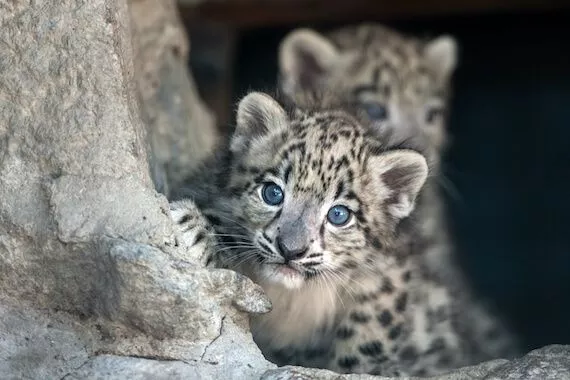
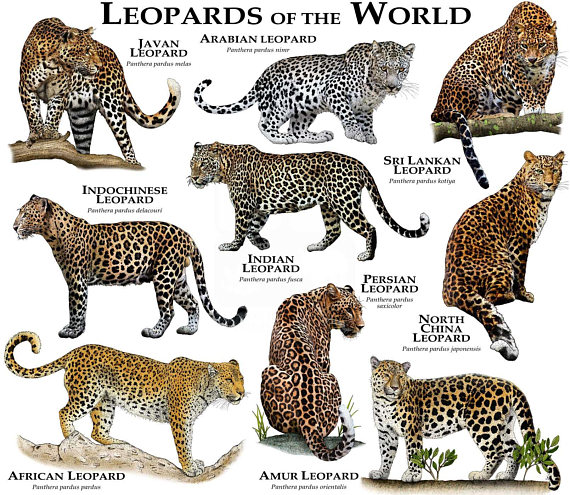

The leopard has an islandwide distribution occurring in protected areas, such as national parks, and isolated forest patches in the hill country and areas with suitable habitat. Leopards can be found in the continents and Africa and Asia, where they are widely distributed but declining throughout most of their range. The sub-species Panthera pardus kotiya is only found in Sri Lanka.
The Sri Lankan Leopard is rapidly declining due to habitat loss and fragmentation, and hunting for trade and due to pest control. Skins and canines are widely traded in Sri Lanka, as the canine is worn as a talisman by some village folks as it is said to bring about good fortune, while certain parts of the animal is eaten or applied to traditional medicine.
Leopards are carnivorous and feed on a myriad of species from Sambur to hare, langurs to rats. Scat analysis carried out in Sri Lanka has found remains of crabs, frog and other small vertebrate and invertebrates. The leopard is a very adaptable animal, able to adapt and occupy various places, there is even a record of a family of leopards occupying a football stadium in Johannesburg, South Africa. This was only noticed when the population of domestic dogs and cats took a rapid decline. Leopards are mainly nocturnal animals but are also encountered during the day, especially in the early mornings and late afternoon. They usually forage alone except in the mating season or when mother and cubs are encountered.
Physical Description Leopards are stocky when compared to the congeners. The tail is longer than half the body length measured from head to tail. They have a shoulder height of about 45 to 80 cm. The muscles attached to the scapula are exceptionally strong, which enhance their ability to climb trees. They are sexually dimorphic, the males being atleast 30% larger than females and mature males having large and broad heads. The Sri Lankan subspecies is one of the largest subspecies of leopard found in the world; this is attributed to lack of other large cats, such as the lion, tiger, viz, putting the leopard at the top of the food chain, no competitive restriction from large prey.
